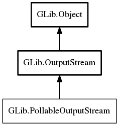

PollableOutputStream
Object Hierarchy:
Description:
PollableOutputStream is implemented by OutputStreams that can be polled for readiness to write.
This can be used when interfacing with a non-GIO API that expects UNIX-file-descriptor-style asynchronous I/O rather than GIO-style.
All known implementing classes:

Namespace: GLib
Package: gio-2.0
Content:
Methods:
Inherited Members:
All known members inherited from class GLib.OutputStream
All known members inherited from class GLib.Object